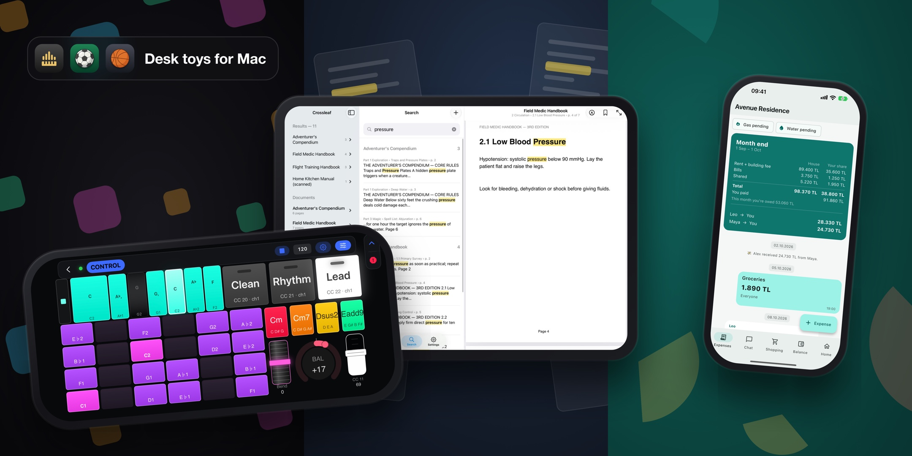
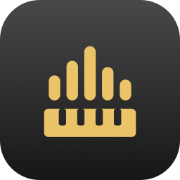

I make small software.
A MIDI controller for iPhone that you lay out yourself, an iPad workspace that searches all your PDFs at once, a shared ledger for people who share a home, and native macOS desk toys and instruments that live in your menu bar. No analytics, no ads, nothing that phones home — and the one app that needs an account says exactly why.
Istanbul, Turkey · support@bulatapps.com


The current one
Midiboard
On the App Store · iPhone & iPad
An iPhone Bluetooth MIDI controller you build yourself. Drop pads, keys, chord buttons, wheels, faders, XY pads and step sequencers onto a grid, drag each one where your hand actually goes, save the screen, and flip between screens with one tap while the song is running.
It exists because I already used a phone controller on stage and the only thing wrong with it was the surface — somebody else's idea of where my hands should be. This one hands you the grid instead. It sends standard Bluetooth LE MIDI, so it works with whatever you already play.

For people who live in PDFs
Crossleaf
On the App Store · iPhone & iPad
A workspace for the big PDFs you search every day: manuals, textbooks, datasheets. Add them once, type a phrase, and every match in every document shows up by document, section and page. Tap one and the page opens at the match. Scanned pages are read on the device, so they are searchable too.
It never connects to the internet, and that is deliberate: the documents people search most are often the ones they are not allowed to upload anywhere. One purchase, no subscription, no account.

For people who share a home
Kırışalım
On the App Store · iPhone · Android in testing · web
A shared account for people who share a home. Rent, bills and subscriptions add themselves every month, groceries go into a chat-like channel, and on the house's cut-off day the month closes on its own: who owes whom, in as few transfers as possible. It never touches the money — you pay each other, the one who receives it taps "got it".
The name is Turkish slang for "let's split it". It is the first thing here with accounts and a server, because a house's ledger has to be the same on every phone in it.
Desk toys & instruments
Things that sit on your desktop and wait
Each one is a native AppKit app of a couple of megabytes with no dock icon, no window in your app switcher and no permissions to ask for. They stop drawing entirely when nothing is moving.
-

Deskestra
A piano, a drum kit, a bass, a guitar, a kalimba, a metronome and a tuner that live in your menu bar. Play them on your computer keyboard while another app has focus. Every instrument is free.
-

Kick Kick
A football goal and a ball floating over your whole desktop. Throw the ball at the goal, let go, try to score. Clicks fall straight through everywhere except on the ball, so nothing you were working in ever loses focus.
-

Hoop Hoop
The same idea with a basketball hoop: throw the ball across your desktop and try to sink it. Built on the same quiet overlay as Kick Kick.
How I build
Small on purpose, all the way down
The desk toys ship as a couple of megabytes because there is nothing in them but the app. Every sound is synthesised in code at launch rather than shipped as audio. The landing pages are plain HTML and one stylesheet with no external requests at all, so they work off a disk.
None of it collects anything. No analytics, no crash reporting, no tracking. Kırışalım is the one app with accounts and a server, because a shared house ledger has to be the same on every phone; the rest have no network code at all. That is not a privacy policy written after the fact — there is simply nothing in there to send.
Deskestra exists because I play guitar and keys and produce music, and I wanted a tuner and a metronome that were already open instead of another window to go and find. Most of what I build starts as something I wanted on my own desk.
Before this I worked on embedded systems and .NET, which is where the habit of counting bytes came from and never quite left.
Built with
- Swift
- AppKit
- Core Animation
- AVAudioEngine
- UIKit
- CoreBluetooth
- Flutter
- Dart
- Supabase
- TypeScript
- C / C++
- Python
Open source
The parts worth handing over
When something in one of these turns out to be generally useful rather than specific to the toy it was written for, it gets pulled out and given away.
-
QuietOverlay
Swift package · macOS 13+ · MIT
The shell underneath the desk toys. A whole-screen overlay window that clicks fall straight through — except where you say they should not — and that can never steal keyboard focus from the app you were typing in.
None of it asks for anything back.
Contact
Say something
Support questions, bug reports, an idea for something small — the same address reaches me for every app here.
- support@bulatapps.comEmail · support for every app
- github.com/safabulatCode
- linkedin.com/in/safabulatThe long version